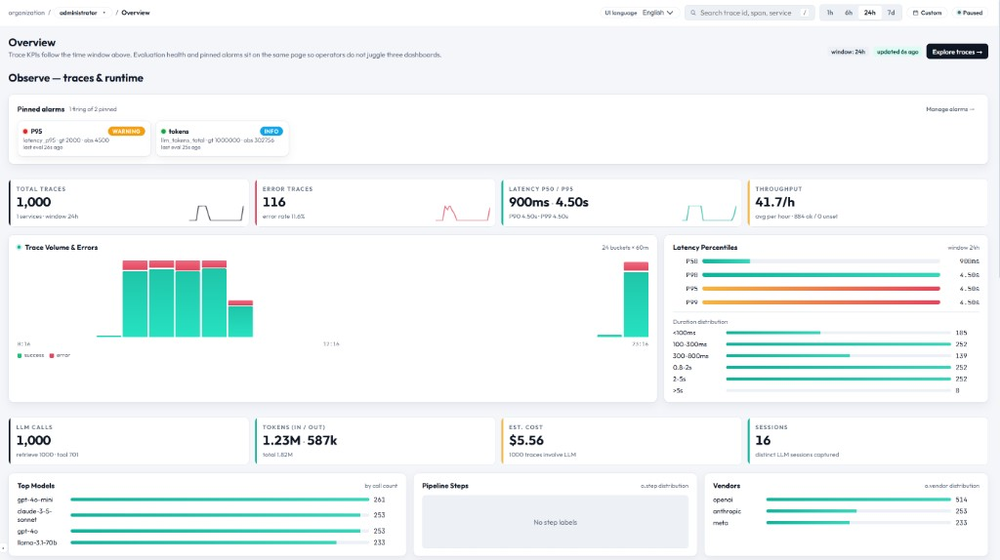

메트릭 & 대시보드 — 전체 기능 매뉴얼
Overview 대시보드는 EasyObs 워크스페이스의 첫 화면입니다. 선택된 시간 범위 내에 수집된 모든 트레이스에 대해 핵심 KPI, 추세 차트, 품질 요약을 한눈에 보여줍니다.

대시보드 레이아웃
대시보드는 메트릭 카드 행으로 구성됩니다.
| 행 | 구성 요소 | 역할 |
|---|---|---|
| 1 | KPI 카드 (상단) | 주요 수치와 추세 표시 |
| 2 | 스파크라인 차트 | 핵심 메트릭의 시계열 추세 |
| 3 | 도넛 차트 + 누적 막대 | 분포와 분해 시각화 |
| 4 | Quality 패널 | 최신 평가 통과율과 알람 상태 요약 |
| 5 | 고정 알람 | 활성/발령 중인 알람을 강조 표시 |
KPI 카드 (1행)
최상단 행에는 핵심 지표 5~6개가 표시됩니다.
| KPI | 값 | 추세 | 설명 |
|---|---|---|---|
| Total Traces | 건수 | 이전 구간 대비 | 해당 시간 범위의 전체 트레이스 수 |
| Error Rate | 퍼센트 | 이전 대비 | ERROR 상태 트레이스의 비율 |
| Avg Latency | ms / 초 | 이전 대비 | 전체 트레이스의 평균 End-to-end 지연 시간 |
| Total Cost | USD | 이전 대비 | 해당 구간의 누적 LLM 비용 |
| Total Tokens | 건수 (K/M) | 이전 대비 | 입력 + 출력 토큰 합계 |
| Active Sessions | 건수 | 이전 대비 | 관측된 고유 세션 ID 수 |
추세 표시 로직
- 현재 구간을 동일 길이의 직전 구간과 비교합니다(예: 최근 1시간 vs 그 직전 1시간).
- 녹색 화살표 → 개선됨(에러율/비용 감소 등)
- 빨간 화살표 → 악화됨(에러율/지연 시간 증가 등)
- 회색 대시 → 비교에 충분한 데이터가 없음
스파크라인 차트 (2행)
핵심 메트릭의 추세를 보여주는 컴팩트한 시계열 라인 차트입니다.
| 차트 | Y축 | 버킷 크기 |
|---|---|---|
| Trace Volume | 버킷당 건수 | 자동 (1분 / 5분 / 1시간, 시간 윈도우에 따라) |
| Error Rate | 퍼센트 | 동일 |
| P50 / P95 Latency | 밀리초 | 동일 |
| Cost Trend | 버킷당 USD | 동일 |
임의의 지점 위에 마우스를 올리면 정확한 값과 시각이 툴팁으로 표시됩니다.
도넛 차트 (3행)
트레이스 상태 분포를 시각화합니다.
- OK (녹색) → 성공한 트레이스
- ERROR (빨간색) → 실패한 트레이스
- UNSET (회색) → 상태가 명시적으로 설정되지 않은 트레이스
중앙 텍스트는 가장 큰 비율을 차지하는 상태의 퍼센트를 보여줍니다.
백분위수 막대
지연 시간 백분위수 분포를 가로 막대로 표시합니다.
- P50 → 중앙값 (50번째 백분위수)
- P75 → 75번째 백분위수
- P90 → 90번째 백분위수
- P95 → 95번째 백분위수 (주요 SLA 지표)
- P99 → 99번째 백분위수 (테일 지연)
누적 막대 (3행)
차원별 사용량을 가로 누적 막대로 분해해서 보여줍니다.
- By Service: 서비스별 토큰/비용 분포
- By Model: 어떤 LLM 모델이 가장 많은 토큰을 소비하는지
- By Span Kind: agent / llm / retrieve / tool 사용 비중
Quality 패널 (4행)
Quality 모듈에서 가져온 요약 카드입니다.
- Latest Pass Rate: 가장 최근 완료된 평가 실행의 통과율
- Trend: 최근 5회 실행의 통과율 추이 (미니 스파크라인)
- Open Improvements: "open" 상태인 개선 팩의 수
- Link: "View Details" → Quality > Runs로 이동
고정 알람 (5행)
활성 상태(FIRING)인 알람이 대시보드에 고정 표시됩니다.
- 알람 이름, 현재 값과 임계값 비교, 지속 시간을 표시
- Critical은 빨간 테두리, Warning은 노란 테두리
- 클릭 시 Alarms 페이지로 이동하여 상세 확인
- 알람이 OK 상태로 돌아오면 자동으로 사라집니다.
시간 윈도우 컨트롤
상단 시간 윈도우 선택은 대시보드 전체 데이터에 동일하게 적용됩니다.
| 옵션 | 범위 | 버킷 크기 |
|---|---|---|
| 1h | 최근 1시간 | 1분 |
| 6h | 최근 6시간 | 5분 |
| 24h | 최근 24시간 | 15분 |
| 7d | 최근 7일 | 1시간 |
| Custom | 사용자 정의 시작/종료 | 자동 계산 |
Live 모드
- 시간 윈도우 컨트롤의 "Live"를 켜면 자동 새로고침이 활성화됩니다.
- 대시보드 데이터가 5초마다 갱신됩니다.
- 시간 윈도우가 앞으로 이동해 항상 "최근 N" 구간을 보여줍니다.
- 배포 또는 부하 테스트 중 모니터링에 유용합니다.
데이터 신선도
- KPI 데이터는 서버에서 계산되며,
staleTime: 30s로 캐싱됩니다. - Live 모드가 아닌 경우 새 데이터를 받으려면 수동 새로고침이 필요합니다.
- "X초 전 업데이트됨" 형식의 안내가 데이터의 신선도를 보여줍니다.